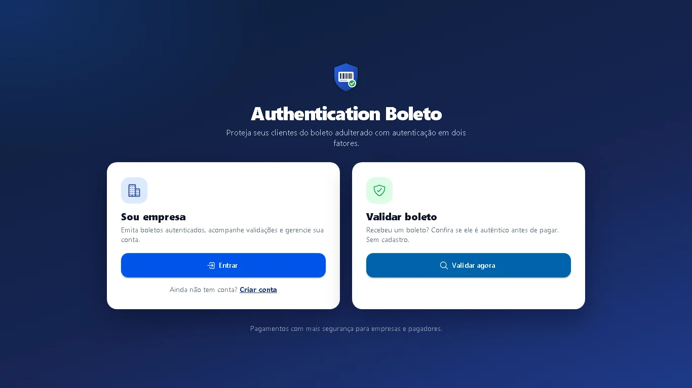
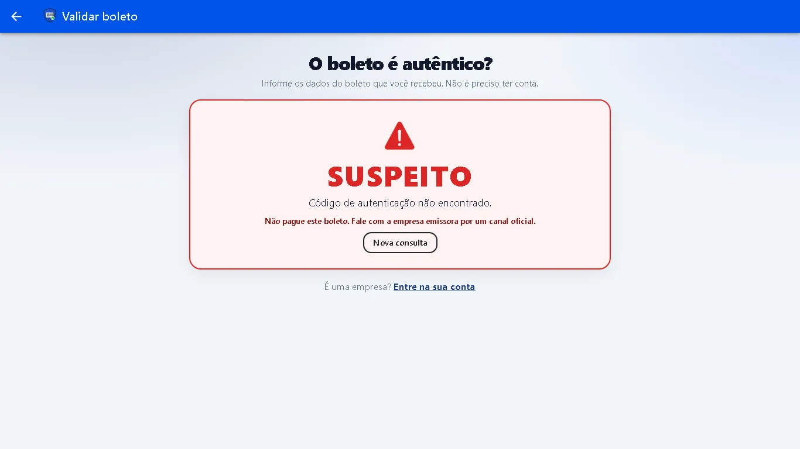
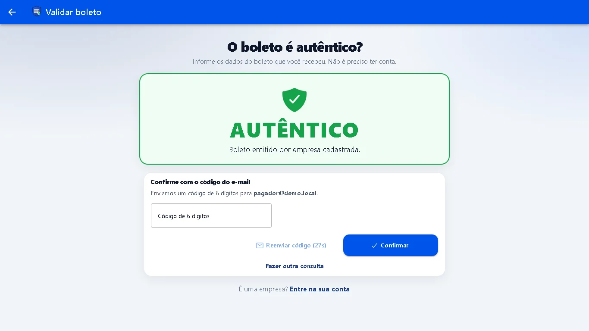
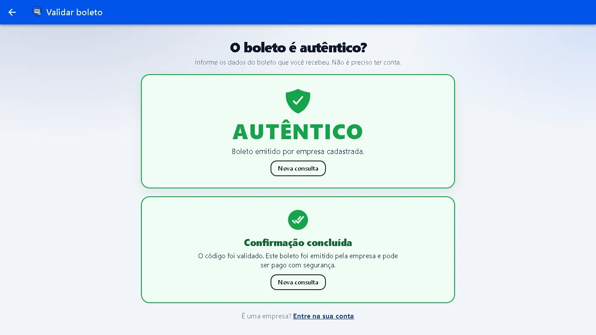
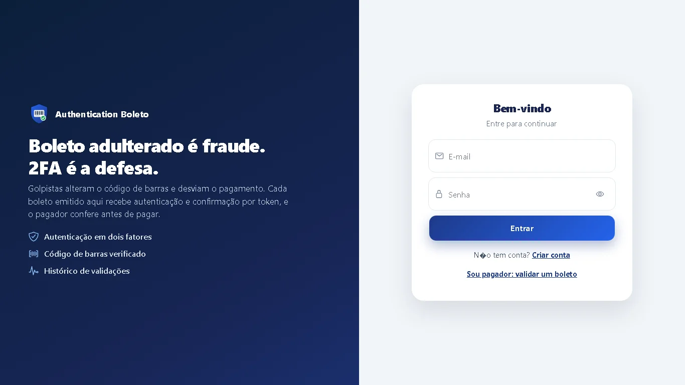
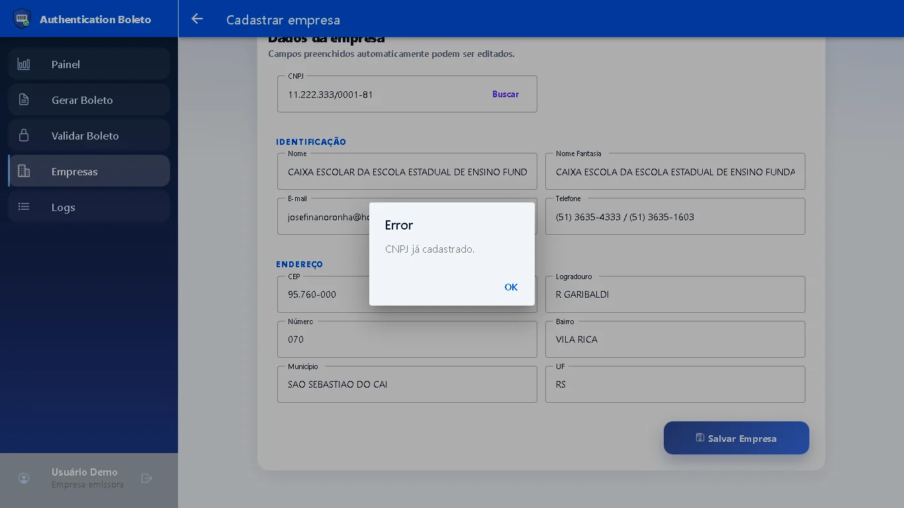
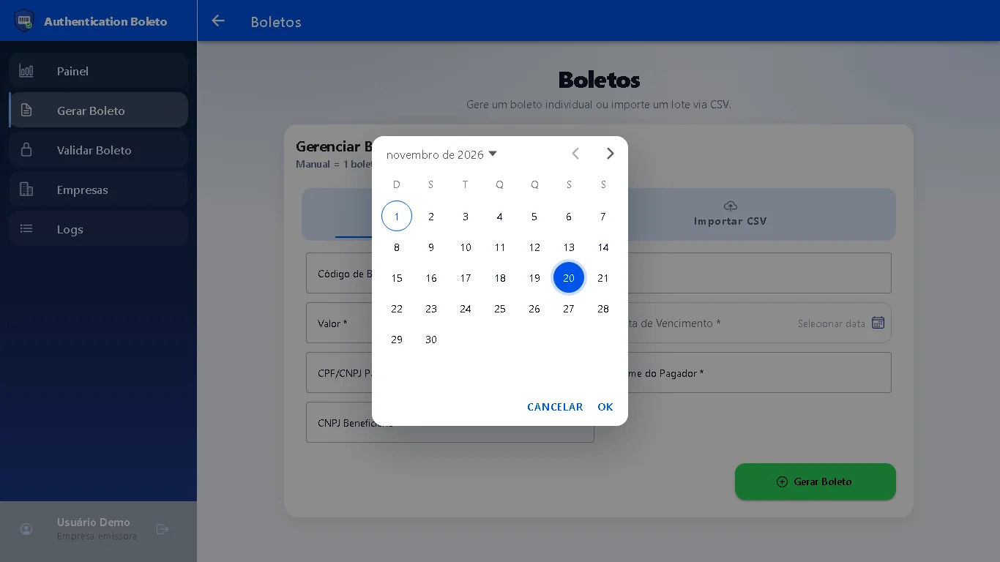
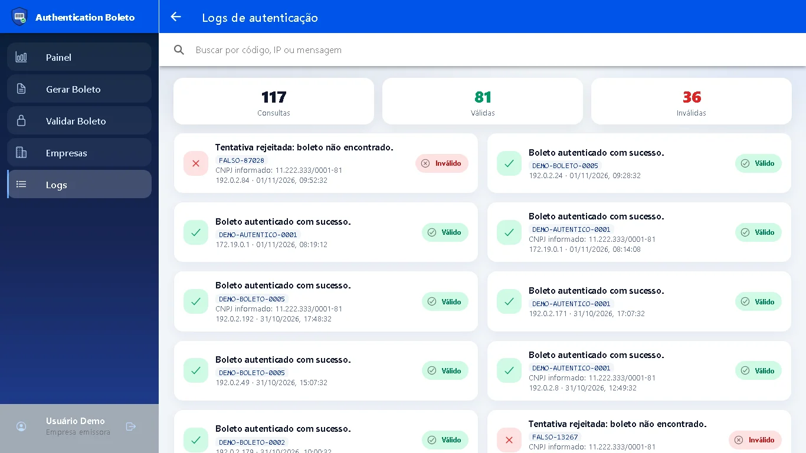
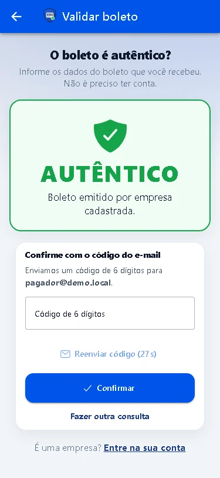
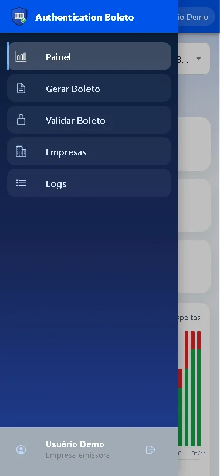

Authentication-Boleto
Verificação antifraude de boletos com 2FA: validação pública para o pagador e painel de métricas para a empresa emissora.
Ver repositórioProblema
No golpe do boleto falso, a linha digitável ou o beneficiário é trocado antes do pagamento. O Authentication-Boleto deixa o pagador conferir o boleto contra o cadastro da empresa emissora antes de pagar e confirmar com um código de 6 dígitos enviado por e-mail. A empresa acompanha quantas validações foram autênticas e quantas foram suspeitas.
Para quem
🏢 Empresa emissora (B2B)
- Cadastro com login JWT
- Registro de empresas por CNPJ (preenchimento via ReceitaWS e ViaCEP)
- Emissão manual ou importação de boletos em lote (CSV + RabbitMQ)
- Painel com métricas de 30 dias e logs de validação
🙋 Pagador
- Validação pública e gratuita, sem login
- Aceita código de autenticação ou código de barras, com CNPJ opcional
- Veredito AUTENTICO ou SUSPEITO
- Confirmação com token de 6 dígitos por e-mail (2FA)
Stack
| Backend | Java 17, Spring Boot 3.3, Spring Security com JWT (jjwt), Data JPA, AMQP, Mail, OpenFeign, springdoc — dois serviços (auth e lote) |
| Banco e fila | PostgreSQL 16 e RabbitMQ 3 |
| Frontend | Ionic 8, Angular 17 e Capacitor (build Android) |
| Infra | Docker Compose (postgres, rabbitmq, mailpit, auth, batch, nginx) |
Principais funcionalidades
Validação pública
- Rotas
/api/public/boleto/validar,/enviar-tokene/confirmar - Conferência do CNPJ do beneficiário
- Toda tentativa vira log
2FA por e-mail
- Token de 6 dígitos, válido por 5 minutos
- Nunca devolvido na resposta da API
- Mailpit captura os e-mails na demo
Painel da empresa
- Boletos emitidos e validações autênticas e suspeitas por dia
- Lista das empresas do usuário
- Histórico de validações
Lote
- Upload de CSV no serviço de lote
- Uma mensagem por boleto no RabbitMQ
- Falha de um boleto não trava o lote
Destaques técnicos
- Rota pública com rate limit: 10 requisições a cada 60 s por IP + rota, com resposta 429 padronizada.
- Limite de tentativas do token: na 5ª tentativa errada o token é cancelado e é preciso pedir outro.
- Isolamento por dono: cada empresa tem dono; acessar a de outro usuário retorna 403
ACESSO_NEGADO. - JWT com role: perfis
EMPRESAeADMIN, sessão stateless. - Métricas: agregação por dia de validações autênticas e suspeitas por empresa (indicativas, não fraude confirmada).
- 2FA com Mailpit: fluxo de e-mail completo na demo, sem nenhum dado sair do ambiente.
- Contrato de erro único: toda resposta de erro com
codeestável etraceId. - Testes: 65 testes no serviço de autenticação e 10 no serviço de lote (JUnit 5 + Mockito).
- Dados de demonstração 100% fictícios (LGPD).
Telas
Capturas do ambiente de demonstração, com dados fictícios.










